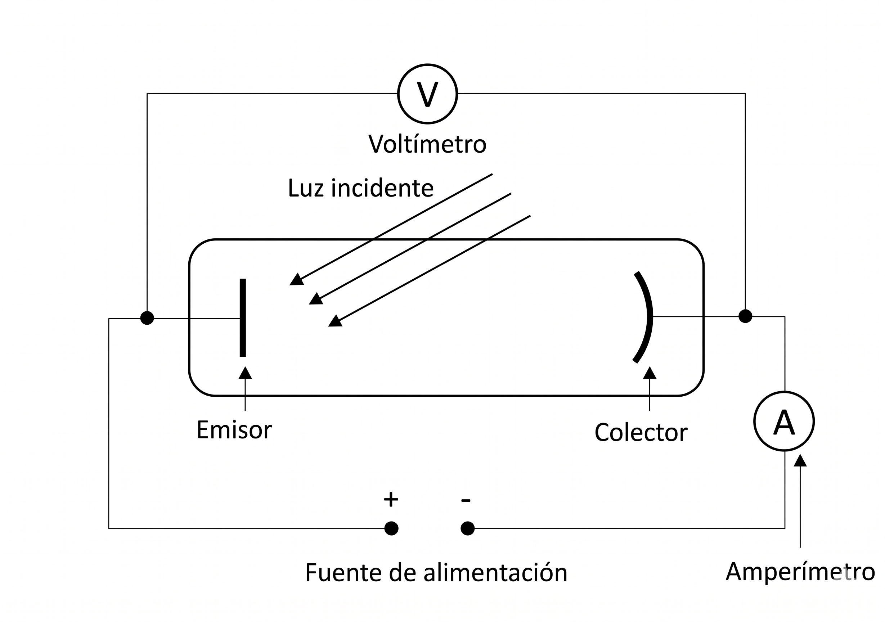
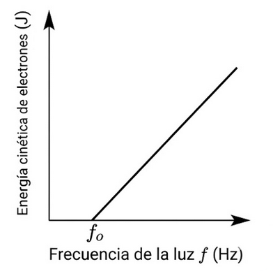
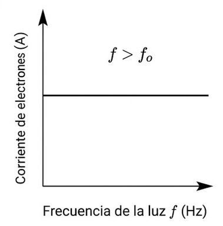
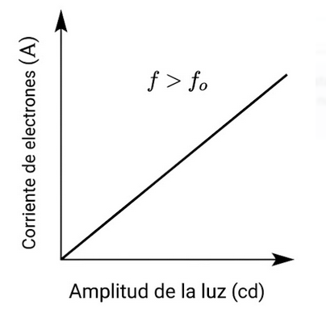
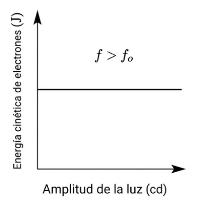

El efecto fotoeléctrico
Fue descubierto a finales del siglo XIX. En los primeros años del siglo XX aún no se había encontrado una explicación física satisfactoria para este fenómeno.
El efecto fotoeléctrico es un fenómeno físico que consiste en la emisión de electrones por una superficie metálica cuando sobre ella incide luz de determinada frecuencia. A los electrones emitidos de esta forma se les llama fotoelectrones.
Para estudiar el efecto fotoeléctrico se puede usar una célula fotoeléctrica. Los fotoelectrones emitidos son recogidos por el colector, de forma que en el amperímetro se mide el paso de corriente eléctrica.

Experimentalmente se obtienen los siguientes resultados:
- Si la frecuencia de la luz es menor que una frecuencia mínima, no hay emisión de fotoelectrones.
- Si la frecuencia es igual o mayor que esa frecuencia mínima, sí hay emisión.
- La frecuencia mínima depende del metal y se llama frecuencia umbral (\(\nu_0\)).
- Cuando se ilumina con luz de frecuencia igual o superior a la frecuencia umbral, la intensidad de corriente (el número de fotoelectrones emitidos) es proporcional a la intensidad de la luz con la que se ilumina la placa fotosensible.
- Utilizando un cátodo (electrodo negativo) como colector se frenan los fotoelectrones emitidos. Ajustando el potencial de este cátodo se puede frenar a todos los fotoelectrones, de manera que no se mida paso de corriente por el amperímetro. Si esta operación se realiza para distintas intensidades de la radiación luminosa se obtiene que los electrones salen de la placa con la misma velocidad máxima, independientemente de la intensidad de la radiación. Sin embargo, esta velocidad máxima aumenta si se aumenta la frecuencia de la radiación.
Las siguientes gráficas resumen estos resultados experimentales:

Esta gráfica destaca la existencia de una frecuencia umbral: por debajo de ella no hay fotoemisión aunque aumente la intensidad.

Para frecuencias por encima del umbral, la corriente permanece aproximadamente constante al aumentar la frecuencia.

Al aumentar la amplitud (intensidad) de la luz, aumenta la corriente porque se emiten más fotoelectrones por unidad de tiempo.

La energía cinética de los fotoelectrones se mantiene prácticamente constante al variar la amplitud de la luz.
Problemas de la explicación clásica
Al intentar explicar este fenómeno con las leyes físicas conocidas hasta entonces no se llegaba a ningún resultado satisfactorio:
- No se podía explicar por qué la emisión de electrones era instantánea. Los cálculos indicaban que era necesario que transcurriera cierto tiempo, hasta que el electrón absorbiera radiación suficiente como para adquirir la energía necesaria para abandonar la placa de metal.
- No debía existir una frecuencia umbral. Para cualquier radiación debía observarse emisión de fotoelectrones. Si la frecuencia era pequeña, simplemente habría que esperar más tiempo para que el electrón adquiriese energía suficiente para abandonar el metal.
- No se podía explicar por qué la velocidad con la que los electrones abandonaban el metal dependía de la frecuencia de la radiación y no de su intensidad.
Teoría de Einstein
En 1905, Albert Einstein explicó el efecto fotoeléctrico basándose en la hipótesis cuántica de Planck:
- La radiación electromagnética no solo se absorbe o se emite de forma discontinua, sino que también se propaga así; es decir, está constituida por cuantos o paquetes de energía llamados fotones, que se comportan como partículas.
- La energía \(E\) de cada fotón es, según la fórmula de Planck:
\[ E = h\nu \]
- Si el fotón tiene, al menos, la energía mínima necesaria para arrancar al electrón, este, una vez que ha absorbido la energía del fotón, abandonará el metal. A la frecuencia \(\nu_0\) que corresponde a esa energía mínima se la denomina frecuencia umbral. A esa energía mínima se la llama función trabajo o trabajo de extracción \(W_e\):
\[ W_e = h\nu_0 \]
- Si el fotón que interacciona con el electrón tiene una energía inferior al trabajo de extracción, este no podrá ser arrancado del metal.
- Si la energía del fotón es mayor que el trabajo de extracción, la energía en exceso se convierte en energía cinética del fotoelectrón, según el siguiente balance de energía:
\[ h\nu = W_e + E_{C,\text{máx}} \]
Por tanto:
\[ E_{C,\text{máx}} = h\nu - h\nu_0 \]
Con esta teoría se explica:
- Por qué los electrones son arrancados del metal instantáneamente, ya que la absorción del fotón por el electrón es prácticamente instantánea.
- Por qué por debajo de un valor de la frecuencia de la radiación los electrones no abandonan el metal.
- Por qué la velocidad de los electrones, su energía cinética, depende de la frecuencia de la radiación incidente y no de la intensidad de esta.
La explicación de Einstein suponía aceptar que la radiación presentaba un comportamiento corpuscular, teoría defendida en su momento por Newton y desechada por la teoría ondulatoria de la luz.